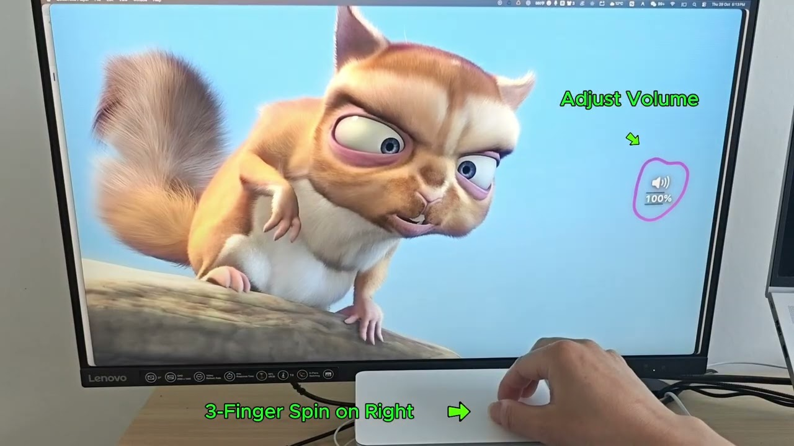
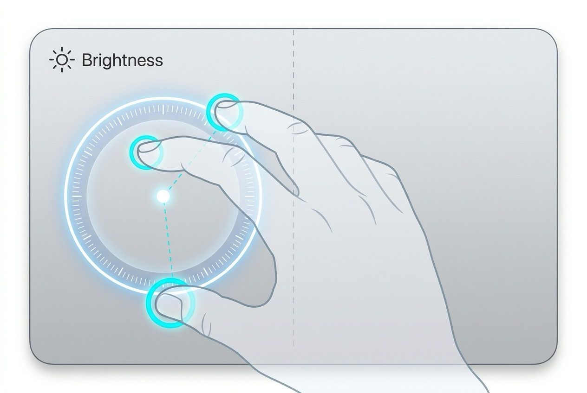
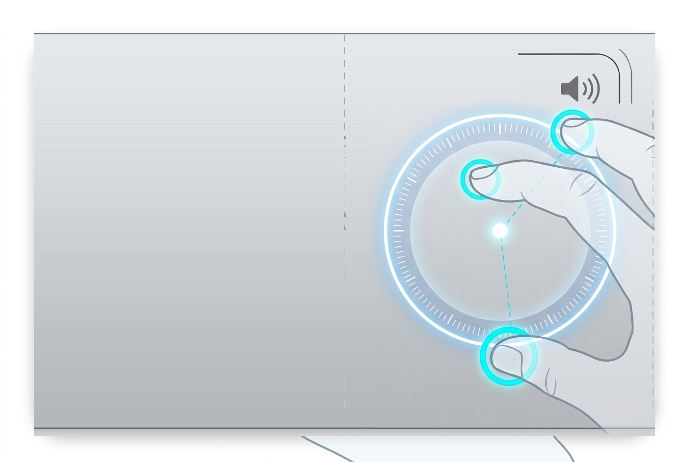

brew install --cask benwu232/tap/epicyclo

打破“先瞄准滑块再拖拽”或“低头摸索按键单步连按”的低效旧习惯。在触控板上实现自然的旋钮操作，左侧控光，右侧驭声，盲操随手可调。

三指在触控板左侧自然旋转。不仅支持 MacBook 内置屏，更支持主流第三方外接显示器。

三指在触控板右侧旋转。不仅支持MacBook内置音箱，也支持外置蓝牙音响。实时跟手，流畅响应，还有系统提示音实时反馈。
音量与亮度是连续的物理量，天然适用于旋钮操作，但受限于操作系统与原生手势的空白，我们一直被困在反复按键与滑块瞄准里，不仅繁锁低效，更会分散注意力，打断心流。Epicyclo 在触控板上实现旋钮手势，操作自然，一分钟上手，丝滑流畅，保持专注。
| 对比维度 | 键盘快捷键 F区实体按键 / Touch Bar |
系统控制中心或第三方软件 Screen Control Center |
✨ Epicyclo 触控板旋钮 三指双区物理模拟旋钮 |
|---|---|---|---|
|
调控速度
Time to Adjust
|
🟡中等（需抬手脱离触控板，耗时约 1~2 秒） | 🔴慢（耗时 3~5 秒：找光标→点菜单→拖滑块） | 🟢极快（0.3 秒：就地旋转即刻生效，无需寻找任何入口） |
|
操作方式
Adjustment Mode
|
🔴离散跳跃（单指反复机械敲击，微调繁琐费力） | 🟡鼠标拖拽（受限于狭窄细小的界面滑块） | 🟢连续旋钮（物理量与旋转手势天然契合，丝滑流畅） |
|
盲操能力
No-Look Operation
|
🔴差（F区键程短易按错，Touch Bar 零物理触感反馈） | 🔴完全无法盲操（视线必须跟随鼠标精准瞄准） | 🟢真·肌肉记忆盲操（无需看屏幕或触控板，随手一转即可） |
|
心流与分心
Focus Disruption
|
🟡视线下移寻找键盘，打断阅读与编码思路 | 🔴视线与光标双重偏离主任务，严重中断深度心流 | 🟢视线无需离开主任务，注意力零中断 |
|
外接显示器
External Monitor
|
🔴macOS 原生快捷键无法调节第三方外接显示器 | 🔴系统控制中心无法统一控制外接硬件物理背光 | 🟢原生支持主流第三方外接屏 DDC/CI 硬件控光 (Pro) |
我们坚信优秀的 Mac 工具应当对系统保持最大的克制与透明，不触碰任何不必要的数据。
开箱即用，无需授予任何系统权限。安全放心，隐私无忧。
不收集除匿名崩溃报告外的其他任何数据，仅用于定位与修复偶发软件缺陷。您可在设置（设置 → 通用）中随时一键关闭。查看完整隐私政策 →
免费版保留基础功能，付费版提供高级功能，且终身买断。
苹果 Mac App Store 强制推行的“App 沙盒机制（App Sandbox）”，严格禁止任何第三方软件直接读取触控板多点触控的底层原始数据流，更禁止直接与外接显示器的底层总线（I2C / DDC-CI）进行硬件通信（这也是 Raycast、Alfred 等专业级 Mac 工具未能在 App Store 存在的硬性技术原因）。
为了实现旋钮手势算法与真实硬件背光直调，Epicyclo 采用官网独立分发。
🛡️ 安全保证：Epicyclo 遵循极简安全哲学，完全无需开启任何权限，不收集除崩溃报告外的任何用户数据（）；同时已通过 Apple 官方公证（Apple Notarized） 与开发者签名，可通过 macOS Gatekeeper 正常安装，请放心下载。
完全不会，无缝共存！ Epicyclo 内置算法会自动区分“三指旋钮”和“三指拖移”，在检测到三个触点后在毫秒级迅速识别手势，一旦锁定，持续到手指抬起。
完全不需要！ 这是 Epicyclo 与其它同类软件最大的不同。Epicyclo 基于底层原生触控板事件驱动，完全无需开启可能危及隐私的“辅助功能”或“输入监控”权限，既安全、轻巧又省电。
完美支持。无论是 MacBook 自带的触控板，还是桌面搭配的 Apple 妙控板（Magic Trackpad），只要系统为 macOS 13 (Ventura) 及以上版本均可无缝使用。
大多数主流品牌的显示器（戴尔、LG、三星、飞利浦等）默认支持并通过 DDC/CI 协议通信。如果未生效，请检查显示器硬件 OSD 菜单中是否开启了“DDC/CI”选项。部分转接头或拓展坞可能会阻断 I2C 信号，建议直连或使用支持 DDC 的雷电拓展坞。
Epicyclo Premium 授权支持个人名下最多 3 台 Mac 同时激活使用（例如一台办公用 MacBook、一台家庭 Mac mini、一台随身笔记本）。
更换新电脑或重装系统时，只需在旧电脑的 Epicyclo 设置中点击「反激活（Deactivate）」，或通过购买凭证邮件中的 Lemon Squeezy 客户门户重置激活席位，即可在新设备上继续使用。
日常几乎零消耗，对电池续航完全无感知。
旋钮绝大部分时间处于静止待命状态，CPU 占用率为 0%；仅在三指旋转的瞬间进行毫秒级低开销计算，HUD 动效全程由 GPU 硬件加速渲染。因为日常调控一次仅耗时一秒左右，实际使用中完全感觉不到电量消耗。
与标准的 macOS 原生软件完全一致：在顶部菜单栏退出 Epicyclo，然后直接将「访达 > 应用程序」中的 Epicyclo.app 拖入废纸篓即可。
Epicyclo 恪守纯粹架构，不安装任何后台常驻守护进程（Daemon）、不修改系统文件，干净无残留。
告别繁冗寻找，拥抱纯粹本能。免费下载 Epicyclo，让触控板成为你 Mac 上最顺手的硬件中枢。